此文章主要記述使用 webpack 的基本流程，用 step by step 方式介紹，
為避免文章失焦，故跟 webpack 主題無關的，皆當大家都知道了，不再特別說明。
一、安裝npm
webpack 套件需經由 npm 安裝，故請先把 npm裝好。
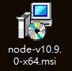
二、新增一個 webpack-demo 資料夾
資料夾名稱目前不接受中文。
三、並到資料夾下執行 $ npm init -y
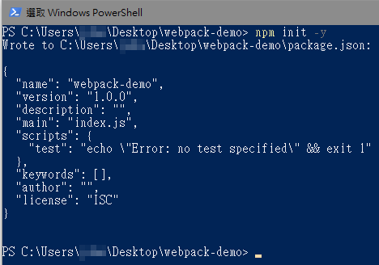
四、此時 webpack-demo 資料夾結構為
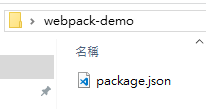
五、webpack 可支持預設的「進入點」與結構
可以無需再添加 webpack.config.js ，但為了更能細部控制 webpack，
webpack.config.js 的設定以後還是需要的。
webpack.config.js 內容與檔案放置的位址請看第十七項。
六、新增 src 與 dist 資料夾
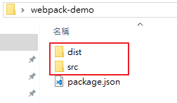
webpack 會將 src 裡的來源檔轉譯出的檔案放到 dist 資料夾裡
七、src 資料夾放入 index.js
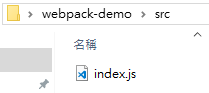
內容為(ES6 語法)
// ES6 modules imports import { library, dom } from '@fortawesome/fontawesome-svg-core'; import { faCoffee } from '@fortawesome/free-solid-svg-icons/faCoffee'; library.add(faCoffee); dom.i2svg();
也等於 commonJS 語法
// CommonJS modules imports const { library, dom } = require('@fortawesome/fontawesome-svg-core'); const { faCoffee } = require('@fortawesome/free-solid-svg-icons/faCoffee'); library.add(faCoffee); dom.i2svg();
八、dist 資料夾放入 index.html
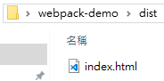
內容為
<!doctype html> <html> <head> <title>Getting Started</title> </head> <body> <i class="fas fa-coffee"></i> <i class="fas fa-coffee"></i> <script src="main.js"></script> </body> </html>
九、安裝 webpack 套件
$ npm install webpack --save-dev
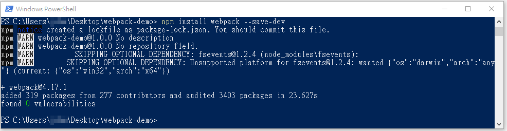
十、此時資料夾多了 node_modules、package-lock.json
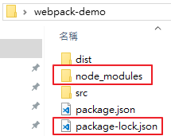
十一、此時 package.json 也有了些改變
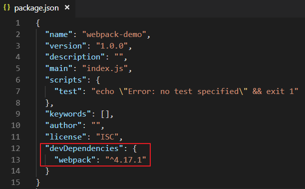
十二、我們在 src 資料夾的 index.js 裡有使用 fontawesome 套件，別忘了用 npm 安裝上去
$ npm install @fortawesome/fontawesome-svg-core
$ npm install @fortawesome/free-solid-svg-icons
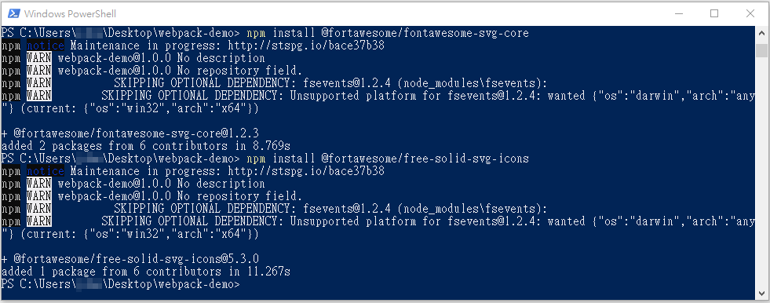
十三、安裝 webpack CLI
由於要執行 webpack 需要安裝 webpack CLI，所以請執行以下指令
$ npm install webpack-cli --save-dev
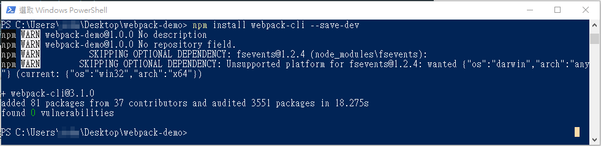
十四、執行 webpack
$ npx webpack
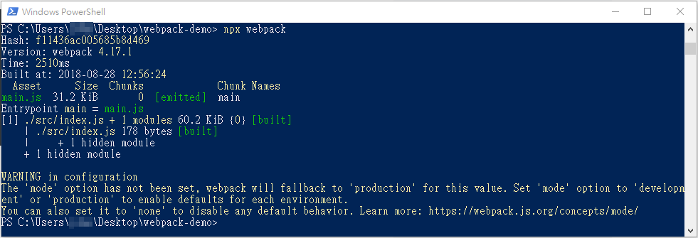
也等於以下指令
$ ./node_modules/.bin/webpack
十五、transpiler 完，這時會產生目地檔 main.js
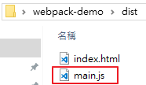
十六、最後執行 index.html 即可完成
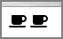
十七、加上 webpack.config.js 來執行 webpack 也可以 transpiler
新增 webpack.config.js 檔案位置如下
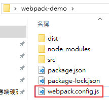
內容為
const path = require('path'); module.exports = { entry: './src/index.js', output: { filename: 'main.js', path: path.resolve(__dirname, 'dist') } };
也等於
const path = require('path'); module.exports = { entry: { 'main': './src/index.js' }, output: { filename: 'main.js', path: path.resolve(__dirname, 'dist') } };
加上 webpack.config.js 來執行 webpack，指令為
$ npx webpack --config webpack.config.js
其結果也可以產生轉譯檔。
十八、利用 NPM Scripts 也可以產生轉譯檔
我們可在 package.json 裡增加一段 "build": "webpack"
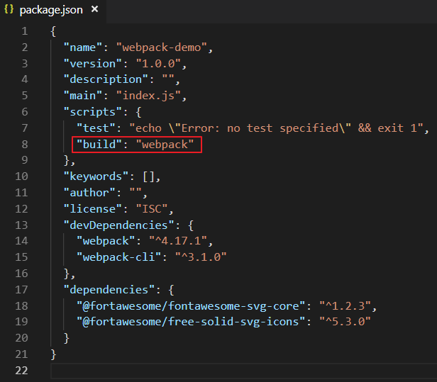
完成後，執行 $ npm run build 也可以產生轉譯檔
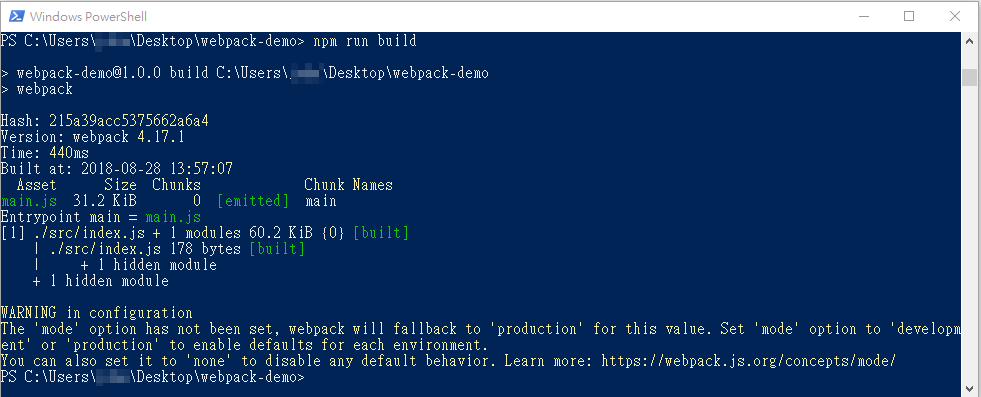
參考資料：